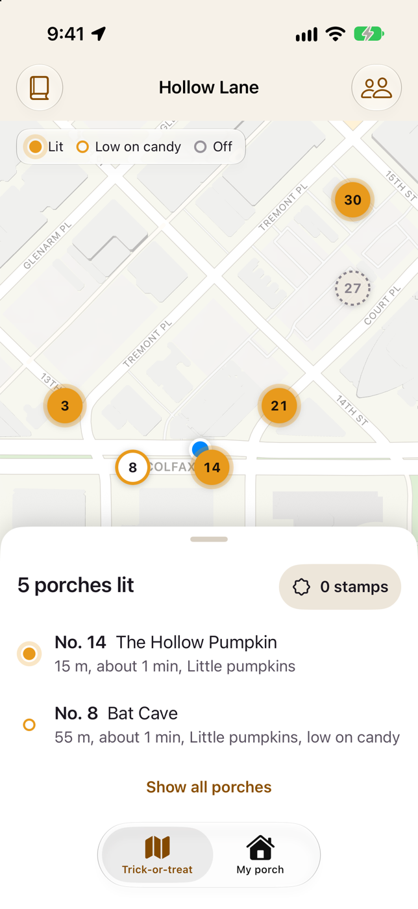
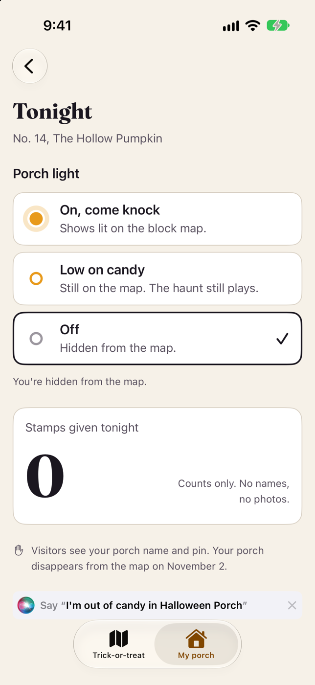
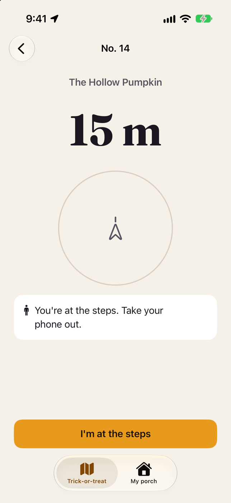
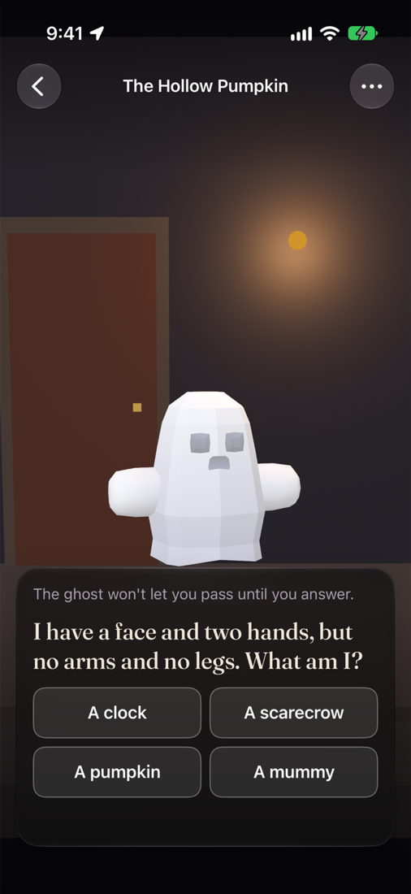
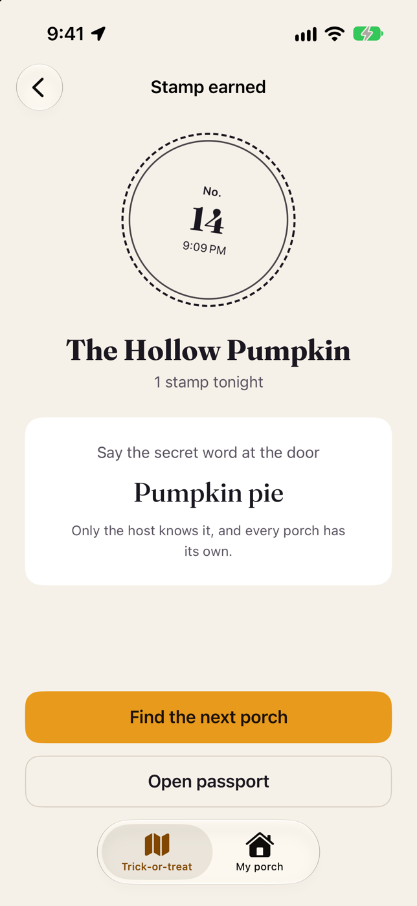

Halloween Porch: Haunt Map
AR ghosts for trick or treat · App Store · updated 17 October 2026
What is new
Version 1.0 is Waiting for Review as of 17 October 2026, so the App Store link returns 404 until release. The app is a map of the lit porches on one street: hosts plot a porch, place up to 4 AR scares, pick a riddle or bat hunt and set a secret treat word; visitors follow a compass and a heartbeat haptic to the steps and earn a stamp. Porch pins are deleted after 2 November.
Facts
- Version
- 1.0 (build 2), built with Xcode 27.0
- Platforms
- iPhone, iPad
- Languages
- 5: English (US, UK, AU, CA) and Spanish (Mexico)
- Price
- Free, no ads
- Privacy
- No tracking, no third-party SDK. Visiting needs no account; hosting needs iCloud. Stamps are stored on the phone. Porch pins are visible only to people with the community code and are deleted after 2 November.
- Accessibility
- Reduce Motion skips the torch flicker and the jump scare; the map legend does not rely on colour alone and hides at accessibility text sizes; VoiceOver labels and Dynamic Type are used across the screens.
- Window
- Halloween, 22 October to 1 November 2026
- Developer
- One developer in Dubai
Screens
Simulator captures of the screens described in the nomination, on the app's sample street (Hollow Lane, join code HAUNT7). The AR view is a simulator stand-in: the camera scene and the ghost are drawn in software, not a camera feed. No marketing frames.





Why now
- Village of Gurnee, Illinois: trick-or-treat Saturday 31 October 2026, 2 to 5pm Municipal page, read 17 Oct 2026